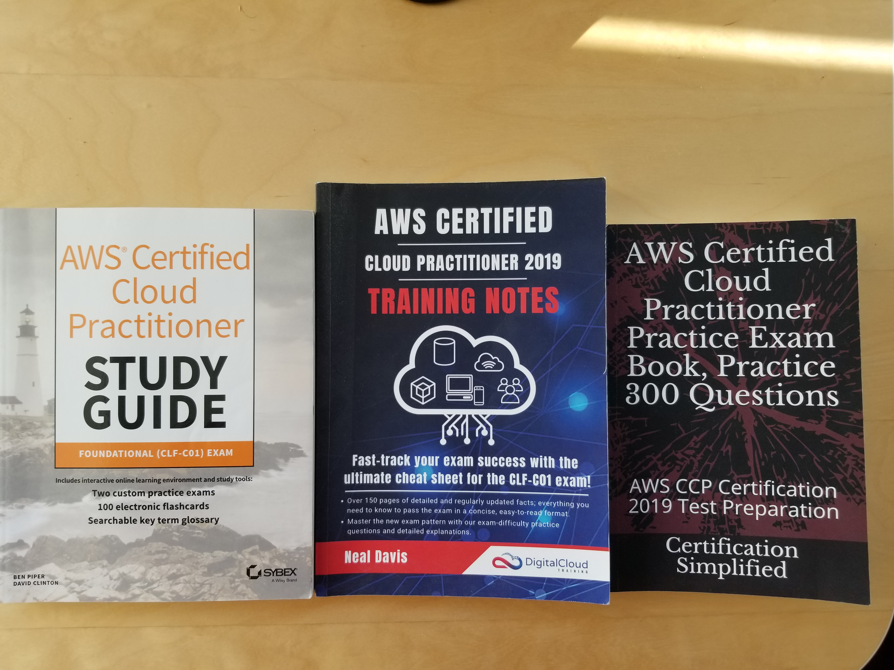

How I Passed AWS Certified Cloud Practioner
Personal Blog by Alexander G. Yang
February 22'2020
This is my official first blog ever. Aside from trying to crank up SEO, I would like to share my experince of my AWS journey as I found it helpful when I read about how other people prepared for their AWS exam. I didn't know anything about AWS until I started job search for my first developer job after finishing coding bootcamp in Toronto. For almost every developer job description, there was a word AWS as "Nice to have" or "Preferred" section. I thought Amazon was only online retailer. What do they have to do with cloud technology and why is it so important to know this in Toronto? It wasn't until I met Andrew Brown from ExamPro during meet up on "How to maximize your profile on linkedin" that my curiosity on AWS took off. Even though meetup was about how to tailor your linkedin profile to attract developer jobs, the conversation lead to AWS since he had all 11 AWS certifications which showed on his profile. He mentioned although junior developers don't really need certification, if I want I can start off with AWS Certified Cloud Practioner, which is considered entry level of AWS certification. It was good way to separate myself from the rest of junior developers I thought. Every time I try to apply on linkedin, I see the number 200 applicants that applied before me. I have to do something different. Thus, my AWS journey begins.
Andrew was kind enough to provide me free access to his ExamPro course for CCP(Certified Cloud Practioner). Course was nicely designed, but since I was total noob, it was taking some time to digest. I knew I was going to need more resources if I want to pass the exam. I googled and found Linux Academy and Cloud Guru to be popular resources for not only cloud but other devops related certifications. I bought Linux Academy CCP Exam preparation course for $13 CAD in Udemy. I found video course was easy to follow and liked the diagram that came along. I also read free notes provided by Neal Davis' Digital Cloud Training site. They were very detailed, but I always liked reading books when I study for something so I bought his notes. That book made big difference. All video courses I watched started making sense as I read the book. But Neal Davis Practice Tests were nasty. If I was getting 80% on Linux Academy practice exam, I would get 60s in his. Practice tests are absolute must. I took mutiple practice tests from different providers just to make sure I can get a good mark consistently. I take no prisoners when it comes to self-investment so I invested in about 5 different study providers.
The pattern of my study was to watch all the video courses, read study notes then do practice tests multiple times then read study notes again then do practice tests until I get over 80%. A lot of people make their own study notes, but I felt there was no need as Neal Davis study notes covered entire topics in a concise manner. After studying for 2 weeks full-time, I felt confident so I booked exam in following week. To pass the actual exam I needed 72% grade. But my grades from practice tests were all over the place. I was getting 50 to 60s in Neal Davis and AWS Official Study Guide, but in ExamPro and Linux Academy, I had no problem clearing 80s. As exam day approached, I noticed I was geting anxious. All I could do was kept grinding...I believe in hard work. At the end of August 2019, I took my first AWS CCP exam. At the end of exam, I had mixed emotion. I had flagged 20 questions where I wasn't 100% confident about answer. But I need at least 47 out of 65 to pass so I kind of panicked. After final review, I pressed that Submit button. The feeling was unreal when I saw that "Congratulation! You Passed!" message. All the hard work paid off. This is how I got my first IT certification and I know there are more to come. Since CCP is foundational level, you just need to understand all AWS services at high level without going into too details. It gives you an good introduction to AWS. As long as you put efforts in reading and doing practice tests, you can clear this in a month.